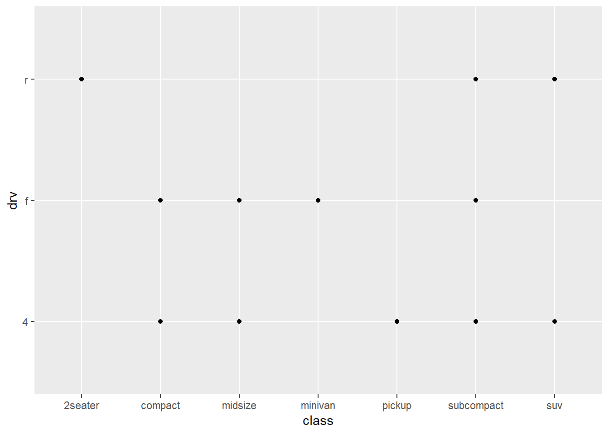

Chapter 2 Data visualisation
2.1 Introduction
In Chapter 1. we installed a package called tidyverse. incase you haven’t.
Now for data visualization, we shall be using ggplot which is a member of tidyverse we just installed.
Building graphs with ggplot ->Point to note (Template for using ggplot) ->DATA is the dataset you will be using ->MAPPINGS - mapping collection of the graph ggplot(data = ) +
2.2 3.2.4 Exercises
Question 1 Run ggplot(data = mpg). What do you see?
ggplot(data = mpg)
ggplot(data = mpg) displays an empty graph
Question 2 How many rows are in mpg? How many columns?
?mpg # displays a detailed description of mpg dataframe inclusive of the number of rows and columns 234 rows , 11 columns/variable#Another alternative
glimpse(mpg)## Observations: 234
## Variables: 11
## $ manufacturer <chr> "audi", "audi", "audi", "audi", "audi", "audi", "...
## $ model <chr> "a4", "a4", "a4", "a4", "a4", "a4", "a4", "a4 qua...
## $ displ <dbl> 1.8, 1.8, 2.0, 2.0, 2.8, 2.8, 3.1, 1.8, 1.8, 2.0,...
## $ year <int> 1999, 1999, 2008, 2008, 1999, 1999, 2008, 1999, 1...
## $ cyl <int> 4, 4, 4, 4, 6, 6, 6, 4, 4, 4, 4, 6, 6, 6, 6, 6, 6...
## $ trans <chr> "auto(l5)", "manual(m5)", "manual(m6)", "auto(av)...
## $ drv <chr> "f", "f", "f", "f", "f", "f", "f", "4", "4", "4",...
## $ cty <int> 18, 21, 20, 21, 16, 18, 18, 18, 16, 20, 19, 15, 1...
## $ hwy <int> 29, 29, 31, 30, 26, 26, 27, 26, 25, 28, 27, 25, 2...
## $ fl <chr> "p", "p", "p", "p", "p", "p", "p", "p", "p", "p",...
## $ class <chr> "compact", "compact", "compact", "compact", "comp...#Another alternative
str(mpg) #gives a detailed description of mpg dataset 234 rows , 11 columns## Classes 'tbl_df', 'tbl' and 'data.frame': 234 obs. of 11 variables:
## $ manufacturer: chr "audi" "audi" "audi" "audi" ...
## $ model : chr "a4" "a4" "a4" "a4" ...
## $ displ : num 1.8 1.8 2 2 2.8 2.8 3.1 1.8 1.8 2 ...
## $ year : int 1999 1999 2008 2008 1999 1999 2008 1999 1999 2008 ...
## $ cyl : int 4 4 4 4 6 6 6 4 4 4 ...
## $ trans : chr "auto(l5)" "manual(m5)" "manual(m6)" "auto(av)" ...
## $ drv : chr "f" "f" "f" "f" ...
## $ cty : int 18 21 20 21 16 18 18 18 16 20 ...
## $ hwy : int 29 29 31 30 26 26 27 26 25 28 ...
## $ fl : chr "p" "p" "p" "p" ...
## $ class : chr "compact" "compact" "compact" "compact" ...#Another way is by using dimension objects nrow() and ncol()
nrow(mpg) #gives number of rows## [1] 234ncol(mpg) #gives number of columns## [1] 11Question 3 What does the drv variable describe? Read the help for ?mpg to find out. Answer : Drv variable is a categorical/discrete variable that categorizes cars into front-wheels, rear-wheels, or four-wheel drive that is : f = front-wheel drive, r = rear wheel drive, 4 = 4wd
Question 4 Make a scatterplot of hwy vs cyl.
#The first argument in ggplot describe dataset we are using
#Use + sign to add more arguments
ggplot(data = mpg) + geom_point(mapping = aes(x = hwy , y = cyl)) Question 5 What happens if you make a scatterplot of class vs drv? Why is the plot not useful?
Question 5 What happens if you make a scatterplot of class vs drv? Why is the plot not useful?
ggplot(data = mpg) + geom_point(aes(x = class , y = drv)) Answer : The two Variables are both categorical variables , why not useful , having two categorical variables usually take on one of a limited, and usually fixed number of possible values in (x,y) to be displayed , thus omiting others.